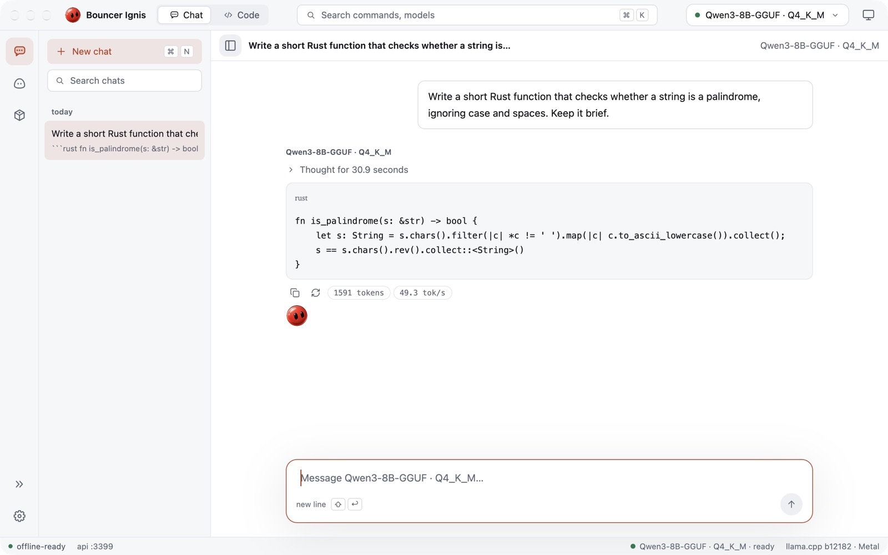
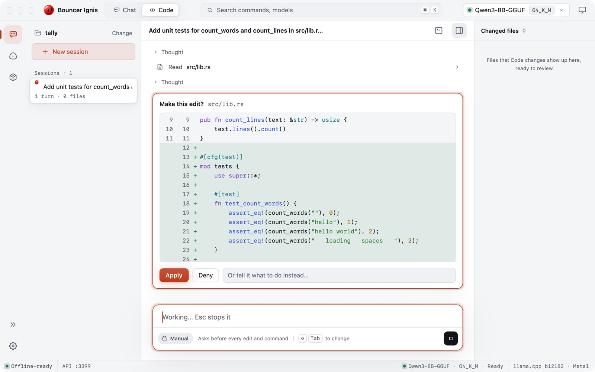
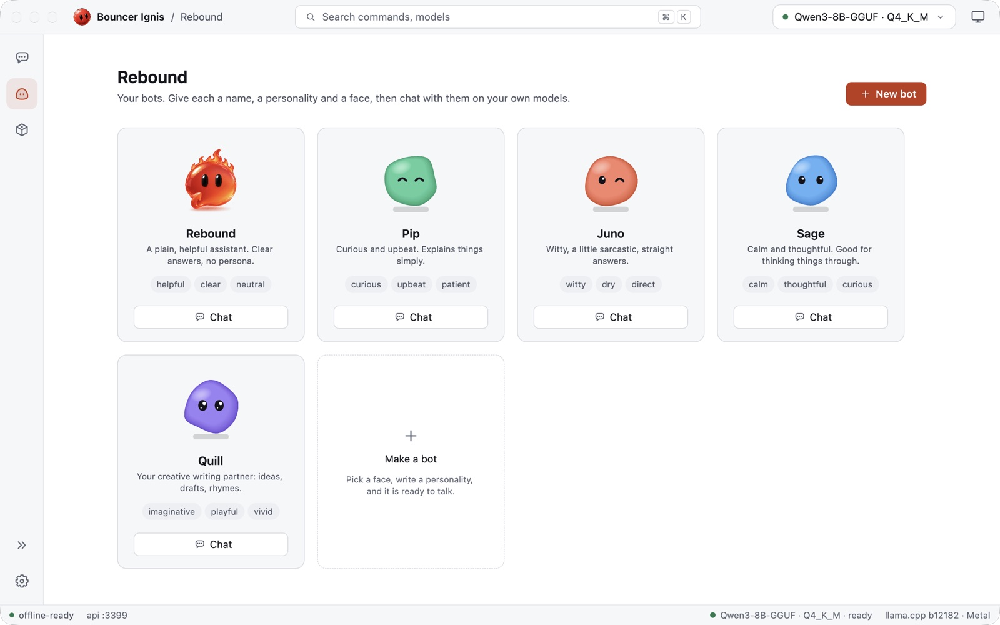
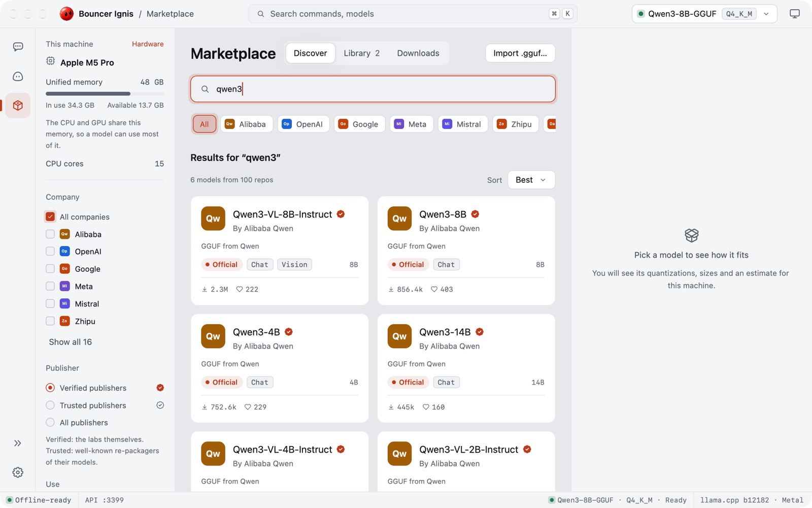
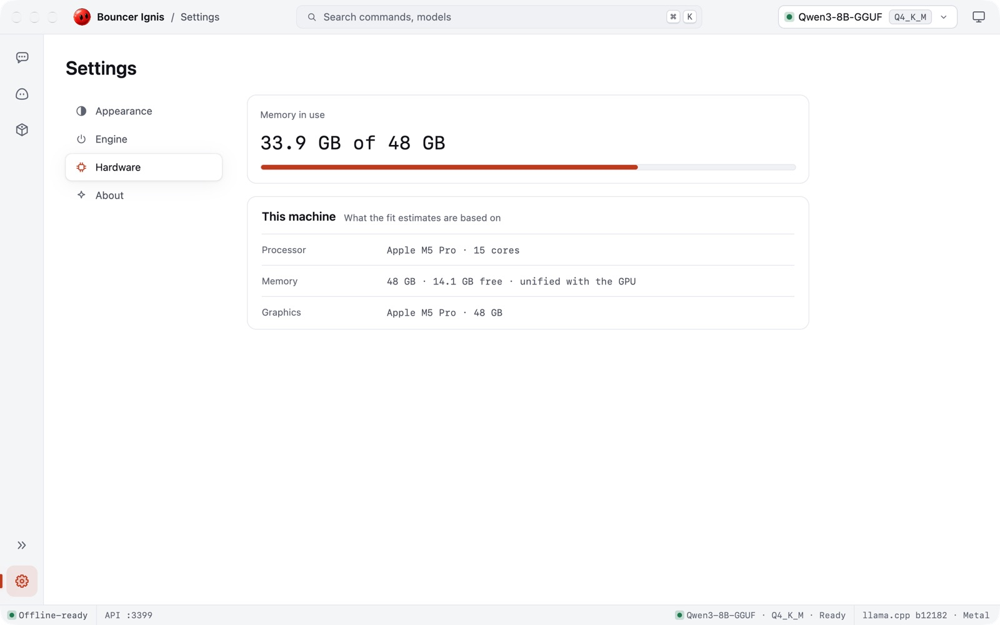

Local AI, with the weight taken off.
Ignis is the lean Rust edition of Bouncer. It has the same model library and the same look, in a fraction of the memory. Chat, code and build Rebound bots with models that run on your Mac.
curl -fsSL https://bouncer-ai.pages.dev/ignis/install.sh | sh
macOS on Apple silicon for now. Intel, Windows and Linux are coming.

One small app, four ways to work.
Everything runs on your machine with llama.cpp. Models come from Hugging Face, and nothing you type or open leaves the computer.
Fast, private chat with your models.
Stream replies, expand the reasoning and pick up any conversation where you left it.
- One model kept warm by the Ignis service
- Chats stored on your computer, not in an account
- The same chat in the terminal with
bi
Code works on a folder and asks before it acts.
Point a model at a folder. Pick how much it may do, and read each change before you approve it. There is no editor: Code is the agent, with a terminal beside it.
- Modes, diffs you approve and checkpoints you can rewind to
- A terminal,
@file mentions and/compactfor long sessions - You stay in the editor you already use

Make bots with a name, a memory and a routine.
Rebound bots have their own instructions, memory and chats. Give one a routine and it runs on a schedule while the service is up.
- Bots, memory and routines
- Chats kept apart from Chat
- The same bots format as Bouncer

Find models that fit your Mac.
Browse GGUF models from Hugging Face. Ignis reads each model and estimates the memory it needs, so you see what will run before you download.
- A fit estimate for every quant
- Your library is shared with Bouncer
- Packages in the bcr format install with
ignis install

Settings that stay out of the way.
Themes (light, graphite and obsidian), the local API, models folder and hardware in one place.
- The local API on 127.0.0.1:3333, this computer only
- A hardware view with memory use
- Ollama port on request

Bots that keep their own context.
Rebound is where bots live. Each has a name, instructions and a memory. Routines run them on a schedule, and the reply reaches you as a desktop notification. Connectors let a bot read one folder or one calendar file, and any reply can be read aloud with your Mac's voices.
Ignis is the lean one.
Both apps use the same model library, package format and service protocol, so you can have both. Bouncer is the full workbench. Ignis keeps the daily parts.
| What | Ignis | Bouncer |
|---|---|---|
| Chat, code, Rebound, marketplace | Yes | Yes |
| Terminal chat and service | bi and ignis | bouncer |
| Local API | Port 3333 | Port 3133 |
| IDE, Studio, Lab, workflows | No | Yes |
| MLX models, accounts and sync | No | Yes |
| Memory | A fraction of Bouncer's | An Electron app |
| Platforms | macOS, Apple silicon | macOS, Windows, Linux |
Setting both up: Ignis with Bouncer.
Point Claude Code at your own model.
The Ignis local API speaks the OpenAI, Anthropic and Ollama shapes, so Claude Code can talk to a model on your machine. The API runs whenever the Ignis service does, so open the app (or run ignis start), then set two variables.
Use a local model
Anthropic-shaped API on port 3333
ANTHROPIC_BASE_URL=http://localhost:3333 ANTHROPIC_AUTH_TOKEN=ignis ANTHROPIC_MODEL=<model id> claudeGet the model id from ignis list. On this computer the key is optional, so any placeholder works. See Claude Code.
The Claude Code plugin
Slash commands and a skill for Claude Code
/plugin marketplace add shankar-sachin/get-ignis
/plugin install ignis@get-ignis
Adds /ignis:status, /ignis:models, /ignis:ask and /ignis:serve-claude, plus a skill that tells Claude when to hand a private task to your local model. Read the plugin docs.
It stays on your machine.
After a model is downloaded, Ignis works without a connection. Your prompts, files and chats are not sent to a server.
Runs offline
Once a model is on disk, chat and code work with the network switched off.
Localhost only
The local API listens on 127.0.0.1, so only programs on your computer can reach it.
Open model formats
Ignis runs GGUF models, the open format used across llama.cpp. You are not locked to one vendor.
Install in one line.
The installer picks the newest release and checks it against SHA256SUMS before it installs. It puts Bouncer Ignis.app in Applications and links ignis and bi into ~/.local/bin.
macOS, Apple silicon
Terminal, bash or zsh
curl -fsSL https://bouncer-ai.pages.dev/ignis/install.sh | sh
Terminal tools only
Just ignis and bi, no app
curl -fsSL https://bouncer-ai.pages.dev/ignis/install.sh | sh -s -- --cli-only
Checking the latest release…
Direct downloads
Release tags look like ignis-v0.3.0.
Unsigned builds
Builds are not signed or notarized yet, so macOS can show a warning on first launch. See the FAQ for the way past it.
Questions, answered plainly.
Ignis or Bouncer?
Pick Ignis if you want chat, code and Rebound in a small app that stays light on memory. Pick Bouncer if you want the IDE, Studio, Lab, workflows, MLX models, or Windows and Linux. They share one model library, so installing both costs you no extra downloads.
Why does macOS warn me?
Ignis builds are not signed or notarized yet, so macOS does not know who made them.
The install script removes the quarantine flag. If you downloaded the .dmg yourself and macOS blocks the app, right-click Bouncer Ignis and choose Open.
What is coming?
Intel Macs, Windows and Linux builds, an updater, and a refreshed design in 0.4.0. Until the updater ships, run the install script again to update.
Which models can I run?
Any GGUF model from Hugging Face that fits your Mac. The Marketplace shows a fit estimate for each quant before you download it.
Does it work offline?
Yes, once a model is downloaded. You need a connection to download models.
Is it open source?
No. Ignis is closed source and proprietary. This repository, get-ignis, hosts the releases, this site, the install scripts and the Claude Code plugin.